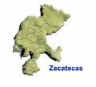

De: La Frikipedia, la enciclopedia extremadamente seria.
De: La Frikipedia, la enciclopedia extremadamente seria. De: La Frikipedia, la enciclopedia extremadamente seria.
| De la serie Países del planeta tierra: | |||||
| Zacatecas | |||||
|---|---|---|---|---|---|
| |||||
| Lema: Nada que ver | |||||
| Himno: {{{himno_nacional}}}
| |||||
| 
capital = Zacatecas | |||||
| Capital | {{{capital}}} | ||||
| Mayor ciudad | (por LOS comercios Y el VICIO) | ||||
| Lenguas oficiales | El español, el eco y algunas desconocidas, hasta el momento | ||||
| Gobierno | Anarquista punk | ||||
| Gobernador | Mi Guey Alonso | ||||
| Área | Cholocientos mil kilometros cuadrados en forma de un mono o indio | ||||
| Población | Mas de la que parece: | ||||
| Moneda | ¿Dónde? | ||||
| Zona horaria | GMT-6 | ||||
| Dominio Internet | algunos hacker y jesuscorp | ||||
| Código telefónico | 492-.....
| ||||
| Es un estado lleno de grafiteros, ragaetoneros, fresas, punks y algunas fusiones de estos)) | |||||
Zacatelas Zacatecas es un estado emocional, maniaco-depresivo-auto destructivo para más exactitud, de México.
Es el último en todos los aspectos; en orden alfabético, riqueza,inteligencia, cultura, deportes, derechos humanos, derechos extraterrestres, gobierno, calidad humana, educación, sanidad, putas (bueno, en eso no), magia, furbol, etc. Pero es el primer lugar en muchos otros aspectos como estos otros: vicio, güeba, cerveza, delincuencia, desempleo, pajones, rangers, persignados, mojigatos, nacos...
Es el estado que mas bajo cayó en seguridad en las ultimas 2 horas.
4 conquistadores Dios Sol. Misma que se robó el Rey de Aspaña cómo bien sabe hacer hasta nuestros días.
Gracias a la plata de Zacatecas, el rey de Espiña pudo llevar una vida decente, y defendió sus ganancias ferreamente frente a los ataques de Piratas ingleses. Pues aún le faltaba construir un baño en su palacio de Madriz. Cuando se acabó la plata, todos vieron a Zacatecas cómo el desdichado páramo seco y polvoriento con un pueblucho por capital que es hoy en día, y trataron de acabar con el durante la Independencia y en la Revolución, por desgracia Zacatecas sobrevivió a todos estos intentos de exterminio. Y probablemente sobreviva una catástrofe nuclear.
Basicamente, un rancho helado y polvoriento, el intelecto de sus habitantes no da para mas que para echar burla estúpida. Todo en la ciudad parece estar mejor que nunca, los pájaros cantan con mas alegría, las vacas dan mas leche, las niñas de 16 se embarazan con menor frecuencia, ya hay equipo de furbol de segunda y la temperatura ambiente pasa de -25 grados a solo -10 grados...
Hay, o ya no hay, un equipo de basquetbol (los Barrenderos), que de repente se vuelven un fantástico equipo de lucha libre. lástima que se supone que juegan al Basquet. En futbol, tenemos el estadio más grande del mundo, porque nadie recuerda haberlo visto lleno en toda su vida. Allí juegan los Mineros de Zacatecas, antes conocidos como los Estudiantes Reprobados de la PUAG.
En Zacatecas se crían los mejores toros de lidia de México pues se les tiene más cariño que a las personas que viven aquí.
El panorama zacatecano se compone de una inmensa y basta proporción de un llano estúpido donde no hay nada, a excepción de la vejiga de cerdo(el cerro de la bufa). No hay playas, pero existen un tipo especial de lagunas artificiales llamados coloquialmente "Balnearios" en donde se congrega la guarrada de nopales a remojarse los pellejos.
Solo hay un río importante, el Aguamarranal,pero no hay montañas, ni valles, ni mesetas, ni ningún otro accidente geográfico interesante, a excepción de los putos cerros.
Existen abundantes cultivos de Marihuana cilantro, malta,caña de alcoholpepsiina, atraparopa,semillas del espacio exterior etc. Ademas de haber aglomeraciones de una especie abundante en la región llamada Naco Erectusy la especie de fucion entre EMO´s y Fresas, cabe destacar ke aki han aparecido muchas de las Tribus urbanas y tal parece que de aki saldran mas.
Autor(es):